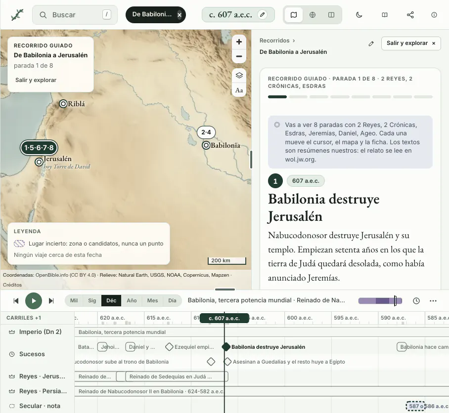

La Biblia en el mapa y en el tiempo
Un atlas para estudiar, en español. Una sola fecha mueve el mapa, la línea de tiempo y la ficha, y cada dato lleva su fuente.
Al ladoArriba, el sitio de verdad, funcionando solo
Recorrido «De Babilonia a Jerusalén», tres de sus ocho paradas.
Preparando el mapa…
El mapa queda en tus manos tal como está. Atrás te devuelve aquí.

Relieve: Natural Earth y datos de elevación de Mapzen
Recorridos guiados
Como el de arriba: cada parada mueve la fecha, el mapa y la ficha. Van a tu paso y se guarda por dónde vas.
Relieve: Natural Earth, USGS, NOAA, Copernicus, Mapzen · Coordenadas: OpenBible.info (CC BY 4.0) · Créditos
Empieza por una pregunta
Cada una abre el mapa en su lugar y en su fecha.
Las épocas, a escala real
De la creación de Adán al año 100. Toca una fecha o una época y el mapa se pone en ella.
Cada dato, con su fuente
Un ejemplo de lo que lleva cada ficha del sitio.